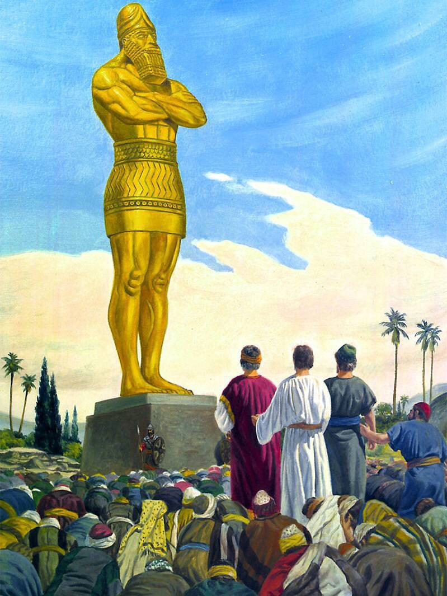
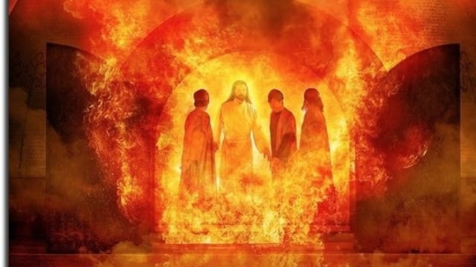

Daniel Chapter Three
Back to contents
The fiery furnace
"VERSE 1. Nebuchadnezzar the king made an image of gold, whose height was threescore cubits, and the breadth thereof six cubits; he set it up in the plain of Dura, in the province of Babylon."
23 years earlier, Daniel had interpreted the king’s dream of a great image whose head was of gold representing the kingdom of Babylon. The head of gold was succeeded by metals of lower qualities denoting that Babylon was to be succeeded by nations inferior to it. Nebuchadnezzar found this not so pleasing and therefore he built a similar image but of gold, from head to feet, to denote that his kingdom would have no end. The image was so huge, 27 metres high and a width of 2.7metres.

"VERSE 2. Then Nebuchadnezzar the king sent to gather together the princes, the governors, and the captains, the judges, the treasurers, the counselors, the sheriffs, and all the rulers of the provinces, to come to the dedication of the image which Nebuchadnezzar the king had set up. 3. Then the princes, the governors, and captains, the judges, the treasurers, the counselors, the sheriffs, and all the rulers of the provinces, were gathered together unto the dedication of the image that Nebuchadnezzar the king had set up; and they stood before the image that Nebuchadnezzar had set up. 4. Then an herald cried aloud, To you it is commanded, O people, nations, and languages, 5. That at what time ye hear the sound of the cornet, flute, harp, sackbut, psaltery, dulcimer, and all kinds of music, ye fall down and worship the golden image that Nebuchadnezzar the king hath set up; 6. And whoso falleth not down and worshipeth shall the same hour be cast into the midst of a burning fiery furnace. 7. Therefore at that time, when all the people heard the sound of the cornet, flute, harp, sackbut, psaltery, and all kinds of music, all the people, the nations, and the languages, fell down and worshiped the golden image that Nebuchadnezzar the king had set up."
The dedication of this image was made of great importance. The means of compelling men to worship the image was simple, pleasure on the other hand, pain on the other. This is the temptation that accompanies every man on earth. Men think that this period of probation is one grand holiday to indulge in anything and everything they want. The saying goes: “Do what though wilt, life is too short.” Could men see with eyes of angels, they could see that God uses hardship, privation and severe discipline to prepare His children for the greater good, eternal life.
"VERSE 8. Wherefore at that time certain Chaldeans came near, and accused the Jews. 9. They spake and said to the king Nebuchadnezzar, O king, live forever. 10. Thou, O king, hast made a decree, that every man that shall hear the sound of the cornet, flute, harp, sackbut, 86 psaltery, and dulcimer, and all kinds of music, shall fall down and worship the golden image; 11. And whoso falleth not down and worshipeth, that he should be cast into the midst of a burning fiery furnace. 12. There are certain Jews whom thou hast set over the affairs of the province of Babylon, Shadrach, Meshach, and Abed-nego; these men, O king, have not regarded thee; they serve not thy gods, nor worship the golden image which thou hast set up."
Where Daniel was upon this occasion, is not known. He was probably absent on some business of the empire, the importance of which demanded his presence. But why should Shadrach, Meshach, and Abed-nego, since they knew they could not worship the image, be present on the occasion? Was it not because they were willing to comply with the king's requirements as far as they could without compromising their religious principles? The king required them to be present. With this requirement they could comply and they did. He required them to worship the image. This their religion forbade, and this they therefore refused to do. Our attention is also drawn to the ingratitude of the Chaldeans. These were probably the wise men of Babylon who years earlier, had failed to interpret the king’s dream. It was Daniel and his three friends that saved them from being slain but it seems they forgot that fact. It has been so throughout all ages. The presence of righteous men is what keeps the wicked alive. It was thus with Sodom and Gomorrah when God promised Abraham that He would not destroy the city if He found ten righteous men in it. All the prisoners were set loose for the sake of Paul and Silas. For the sake of Paul, all who travelled with him were saved when their ship wrecked in the midst of an angry storm.(Acts 16:26) Even today, the prayers of a few men keep the world, which is bound for destruction, moving. If they be removed, the world will be destroyed as speedily as when Noah was withdrawn into the ark and when Lot left Sodom. Yet the wicked will despise, ridicule, and oppress the very ones on whose account it is that they are still permitted the enjoyment of life and all its blessings.
"VERSE 13. Then Nebuchadnezzar in his rage and fury commanded to bring Shadrach, Meshach, and Abed-nego. Then they brought these men before the king. 14. Nebuchadnezzar spake and said unto them, Is it true, O Shadrach, Meshach, and Abednego, do not ye serve my gods, nor worship the golden image which I have set up? 15. Now if ye be ready that at what time ye hear the sound of the cornet, flute, harp, sackbut, psaltery, and dulcimer, and all kinds of music, ye fall down and worship the image which I have made, well: but if ye worship not, ye shall be cast the same hour into the midst of a burning fiery furnace; and who is that God that shall deliver you out of my hands? 16. Shadrach, Meshach, and Abed-nego answered and said to the king, O Nebuchadnezzar, we are not careful to answer thee in this matter. 17. If it be so, our God whom we serve is able to deliver us from the burning fiery furnace, and he will deliver us out of thine hand, O king. 18. But if not, be it known unto thee, O king, that we will not serve thy gods, nor worship the golden image which thou hast set up."
The scriptures teach that we should obey the authority. However, there reaches a point when we must say like apostle Peter, “…we rather obey God than man”. When the law of God conflicts with the law of the land, the people of God must obey the law of God and abide by the consequences. It’s not man’s business to think about the consequences if he does right. God declares that we should always do the right thing and leave the consequences with him. Millions of martyrs throughout the ages stuck with this principle to death. They were burnt alive, fed to wild animals, sawn asunder, skinned and roasted alive but they went into the grave victorious having received the approval of God. There is no excuse to disobey the law of God for the deeds of these faithful men of all ages will stand against us on the final day of reckoning. Shadrach, Meshach and Abed-nego were granted a second chance but they turned the chance down. They said, “O Nebuchadnezzar, we are not careful to answer thee in this matter. If it be so, our God whom we serve is able to deliver us from the burning fiery furnace, and he will deliver us out of thine hand, O king. But if not, be it known unto thee, O king, that we will not serve thy gods, nor worship the golden image which thou hast set up."
"VERSE 19. Then was Nebuchadnezzar full of fury, and the form of his visage was changed against Shadrach, Meshach, and Abed-nego; therefore he spake, and commanded that they should heat the furnace one seven times more than it was wont to be heated. 20. And he commanded the most mighty men that were in his army to bind Shadrach, Meshach, and Abed-nego, and to cast them into the burning fiery furnace, 21. Then these men were bound in their coats, their hosen, and their hats, and their other garments, and were cast into the midst of the burning fiery furnace. 22. Therefore because the king's commandment was urgent, and the furnace exceeding hot, the flame of the fire slew those men that took up Shadrach, Meshach, and Abed-nego. 23. And these three men, Shadrach, Meshach, and Abed-nego, fell down bound into the midst of the burning fiery furnace. 24. Then Nebuchadnezzar the king was astonied, and rose up in haste, and spake, and said unto his counselors, Did not we cast three men bound into the midst of the fire? They answered and said unto the king, True, O king. 25. He answered and said, Lo, I see four men loose, walking in the midst of the fire, and they have no hurt; and the form of the fourth is like the Son of God."
It is said, power corrupts and absolute power corrupts the most. Nebuchadnezzar is such a person who was corrupted by the immense power he had. He was the absolute monarch of the mightiest nation on earth. Intoxicated with immense power, he could not tolerate disobedience or contradiction. The furnace was heated to the utmost capacity. Nothing was gained on the part of the king since even if the furnace was not heated seven times, the three Hebrew friends would still burn and die. But this served to glorify the name of God because the more intense the heat, the greater and more impressive the miracle of being delivered from it. Every circumstance was calculated to show the direct power of God. The men who threw the Hebrew friends into the fire were killed by the flame of the fire. However, the fire had no effect on the Hebrew friends save burning the chords that bound them so that they could not move. Though free and not burning in the midst of the fire, the Hebrew friends did not come out. They found satisfaction while being in the fire since the Son of God was there with them. It is enough for us, in the midst of trials, afflictions and persecutions, to have the Son of God with us.
"VERSE 26. Then Nebuchadnezzar came near to the mouth of the burning fiery furnace, and spake, and said, Shadrach, Meshach, and Abed-nego, ye servants of the most high God, come forth, and come hither. Then Shadrach, Meshach, and Abed-nego came forth of the midst of the fire. 27. And the princes, governors, and captains,and the king's counselors, being gathered together, saw these men, upon whose bodies the fire had no power, nor was an hair of their head singed, neither were their coats changed, nor the smell of fire had passed on them. 28. Then Nebuchadnezzar spake, and said, Blessed be the God of Shadrach, Meshach, and Abed-nego, who hath sent his angel, and delivered his servants that trusted in him, and have changed the king's word, and yielded their bodies, that they might not serve nor worship any God, except their own God. 29. Therefore I make a decree, That every people, nation, and language, which speak anything amiss against the God of Shadrach, Meshach, and Abed-nego, shall be cut in pieces, and their houses shall be made a dunghill; because there is no other God that can deliver after this sort. 30. Then the king promoted Shadrach, Meshach, and Abed-nego in the province of Babylon."

God caused the wrath of man to worship Him. Nothing in this world can work against God. What if we choose to follow Him? The Bible declares that everything works for good for those who love Him. He declares that the righteous man shall be as a tree planted by the side of the river, which bears fruit in his season, his leaf shall not whither and everything he does shall prosper. What about the wicked? There is no peace for the wicked, saith the Lord. He shall be broken into pieces and become like chaff which shall be blown away and no place shall be found for it. It’s just a matter of time.